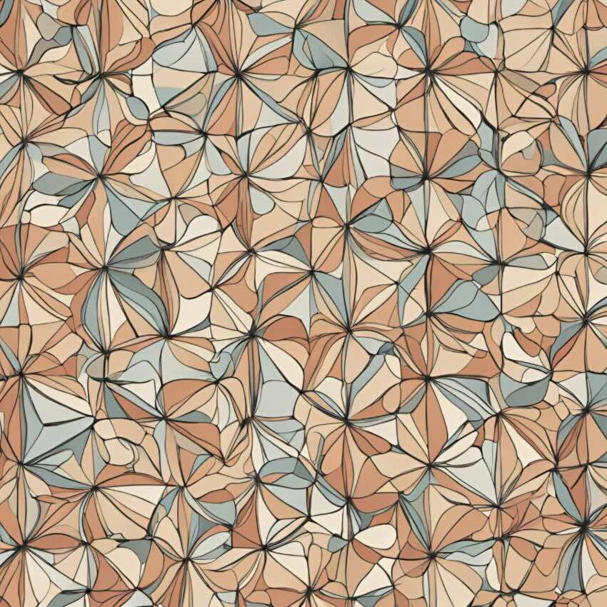
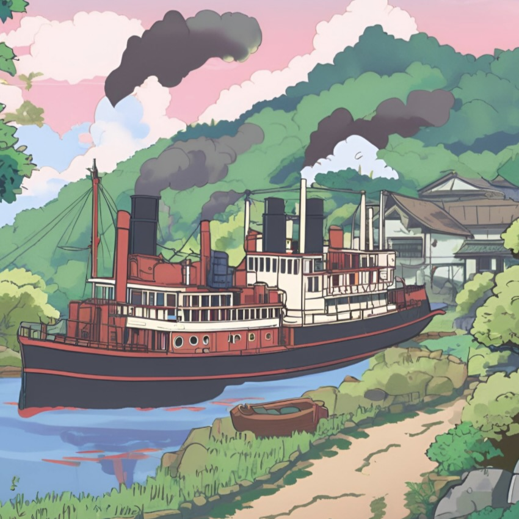
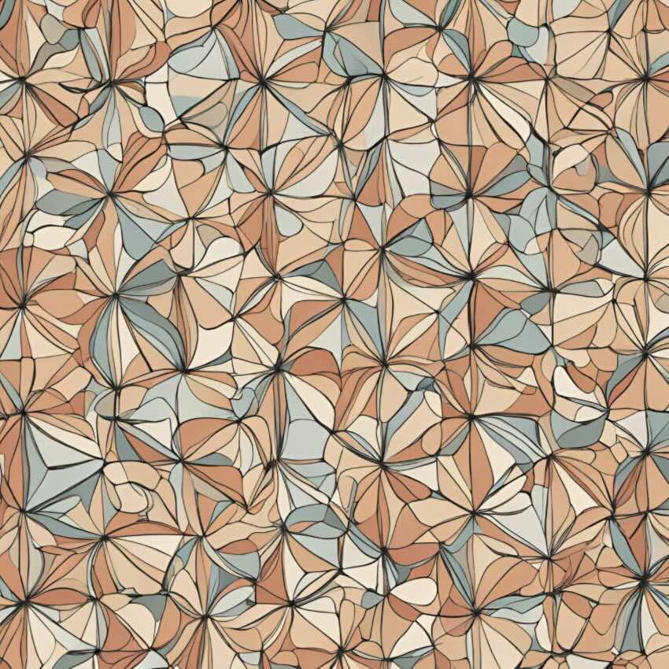
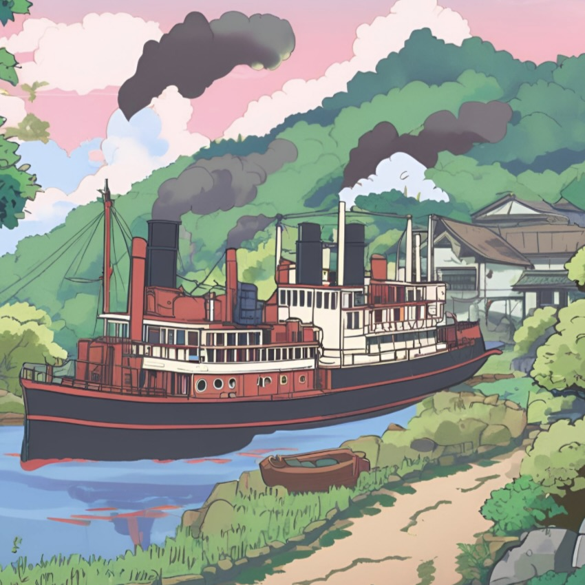

Representation theory of finite groups of Lie type
 



(↑ "Deligne-Lusztig theory" drawn by AI ("Magic Studio"); see Week 1 Notes for some explanation)
Tuesday 2,3,4 (9:10-12:10) @ Astro-Math Building 201
Office Hour: Tuesday 13:30-15:00 @ Astro-Math Building 507
References
[Ser77] Serre, Linear representations of finite groups.
[BH06] Bushnell--Henniart, The Local Langlands Conjecture for GL(2).
[Spr09] Springer, Linear algebraic groups, second ed.
[DL76] Deligne--Lusztig, Representations of reductive groups over finite fields.
[Car85] Carter, Finite groups of Lie type: Conjugacy classes and complex characters.
[DM20] Digne--Michel, Representations of finite groups of Lie type.
[GM20] Geck--Malle, The character theory of finite groups of Lie type: a guided tour.
Notice
- Lecture will not be given on 2024-09-17 (National Holiday).
- Lecture on 2024-10-08 will be given by Prof. Cheng-Chiang Tsai (due to my family matter). Thank you very much, Cheng-Chiang!!!
- Lecture will be given online on 2024-11-12 (I'll be at Boston in USA).
- Lecture will be not given on 2024-11-12 (please see below for more details).
- Lecture will not be given on 2024-12-03 (I'll be at Oberwolfach in Germany).
- For graduate students: Please contact me if you are interested in Arizona Winter School.
Week 1 (2024-09-03)
Course overview
Week 2 (2024-09-10)
Representations of GL_2(F_q)
Week 3 (2024-09-24)
Algebraic groups
Week 4 (2024-10-01)
Reductive groups
Week 5 (2024-10-08)
Deligne-Lusztig varieties
Week 6 (2024-10-15)
Deligne-Lusztig representations
Week 7 (2024-10-22)
Deligne-Lusztig character formula
Week 8 (2024-10-29)
Inner product formula for Deligne-Lusztig character representations
Week 9 (2024-11-05)
Semisimple character formula and exhaustion theorem
Week 10 (2024-11-12) ONLINE
NOTICE:
I realized that I misestimated the time difference between Taipei and Boston...
Now I feel it's difficult to have an online lecture, so please allow me to cancel the lecture on this week.
I'm so sorry about this.
Instead, I'm thinking about giving an online lecture on 2024-12-17.
Its content will be the one originally planned to be given this week.
Week 10 (2024-11-19)
Proof of the orthogonality relation for Green functions
Week 11 (2024-11-26)
Cuspidal representations
Week 12 (2024-12-10)
Unipotent representations and Lusztig's Jordan decomposition
Week 13 (2024-12-17) ONLINE
Example session
@ https://masaooi-421.my.webex.com/meet/masaooi
Course note is here.
Please be careful that this is a low-quality digested version of the union of the references listed above.
Please feel free to contact me!
Office: Astro-Math Building 507
Mail: masaooi at ntu.edu.tw